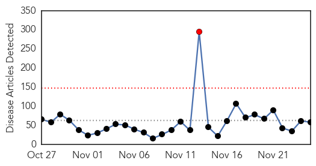
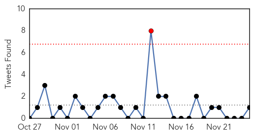

30 Day Trends
Web: 1 alerts, 0 warnings
Twitter: 1 alerts, 0 warnings
Top Articles:
- 0.989
- Number of Flu Cases Surpasses the Peak Month Last Flu Season - KXXV-TV News Channel 25 - Central Texas News and Weather for Waco, Temple, Killeen
- 0.988
- Flu season is here. Get vaccinated.
- 0.951
- 47 dead as plague spreads to Madagascar capital - Panorama
- 0.951
- 47 dead as plague spreads to Madagascar capital
- 0.950
- SGGP English Edition- Vietnam monitors imported creatures in border gates on alert for plague
- 0.938
- Patients screened after 'difficult to treat' bug hits intensive care unit at Royal Victoria Hospital Belfast
- 0.917
- Chicago Tribune
- 0.917
- Chicago Tribune
- 0.917
- Chicago Tribune
- 0.917
- Chicago Tribune
- 0.917
- Chicago Tribune
- 0.917
- Chicago Tribune
- 0.917
- Chicago Tribune
- 0.917
- Chicago Tribune
- 0.917
- Chicago Tribune
- 0.917
- Chicago Tribune
- 0.917
- Chicago Tribune
- 0.917
- Chicago Tribune
- 0.917
- Chicago Tribune
- 0.917
- Chicago Tribune
- 0.917
- Chicago Tribune
- 0.917
- Chicago Tribune
- 0.897
- Only 3 in 10 Americans with HIV have virus under control, CDC warns
- 0.889
- 'Over 5,100 Ducks Died of Avian Flu'
- 0.882
- The most from the coast
- 0.866
- Russia warns Ukraine against NATO membership
- 0.866
- Tunisian presidential candidates head for December run-off vote
- 0.861
- 2 patients at RI Hospital diagnosed with Legionella
- 0.850
- NewsDaily
- 0.850
- NewsDaily
- 0.850
- NewsDaily
- 0.845
- 29 million Americans have diabetes, but a quarter of them don't realize it
- 0.802
- The Portland Press Herald / Maine Sunday Telegram
- 0.757
- Bird Flu Confirmed In Kuttanaad - Trivandrum News
- 0.702
- Susquehanna Health Oncologist Elected to Fellowship in American College of Physicians (Susquehanna Health)
- 0.702
- McKesson Medical Imaging Solutions Will Help St. Rita’s Medical Center Achieve Process and Efficiency Goals (McKesson Corporation)
- 0.690
- Danish Pig Industry Steps Up Biosecurity
- 0.687
- India: Kerala orders culling over bird flu fears
- 0.671
- REFILE-India reports bird flu virus at duck farm in Kerala state - OIE
- 0.642
- Kerala moves to prevent spread of bird flu
- 0.636
- 13 sick: Illegal cheese factory in Portugal leads to brucellosis outbreak
- 0.615
- Mandatory flu shot deadline looms for Vancouver Coastal Health workers
- 0.603
- Wild swans, ducks and gulls to be tested for avian flu: minister
- 0.602
- Bird Sanctuaries Come Under Lens
- 0.597
- C.Diff inquiry: Health secretary Shona Robison in pledge to ensure there will never be a repeat of Vale of Leven tragedy
- 0.589
- Pakistan polio outbreak ‘will probably be fixed next year’, says WHO
- 0.584
- CSIRO: Australia's under-resourced biosecurity puts country at risk
- 0.582
- Doubts cast on purported safety of Tehran city water
- 0.582
- Federal, Sindh govts blamed for poor medical, water facilities
- 0.567
- UND researchers confirm presence of Lyme disease in area ticks
Showing top 50 articles...
Top Tweets:
- 0.743
- (Tuit anterior) Ejemplos: despreciando el uso de bolsas plásticas en las tiendas y evitando materiales de poliéster. Hay muchas más formas.
- 0.680
- En Afrique de l’Ouest, les pays à risque d’Ébola en situation d’alerte maximale
- 0.666
- El 80% de consultas Gineco Obstétricas revelan algún tipo de violencia de género en el Hospital de Clínicas: ... http://t.co/zzcgiLiji2
- 0.609
- Estudiantes mexicanos exigen la renuncia del presidente Peña Nieto en un plazo de 6 días: "De lo contrario, ... http://t.co/2h8F5Xd5wp
- 0.559
- RT: Momento en el que el papá de uno de los 43 jóvenes desaparecidos le dice a "Joven, no cambie nunca" http://…
- 0.538
- A un tipo lo meten 4 años a la cárcel por marihuana y a Mr. Cash lo dejan libre por dos casos de posesión de armas ilegalmente.
- 0.526
- MT: US urged to clarify moratorium on risky virus research, by http://t.co/iiKUWoD9Bj MERS flu GOF
Web/News Articles
Tweets
Article Locations

Article Confidences